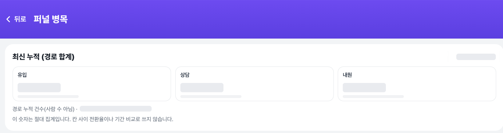
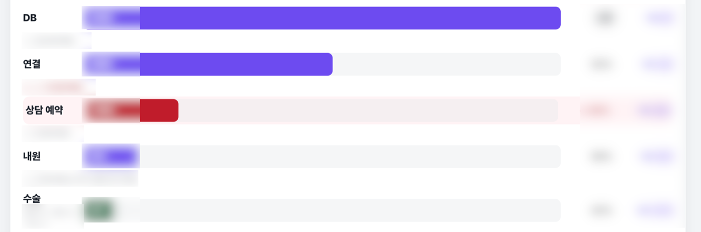
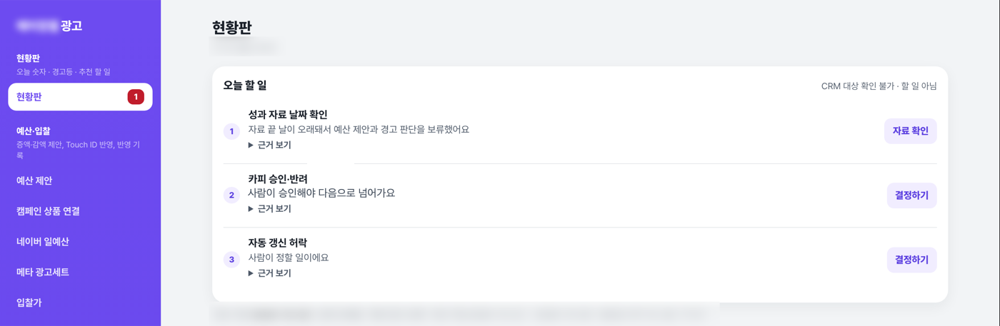
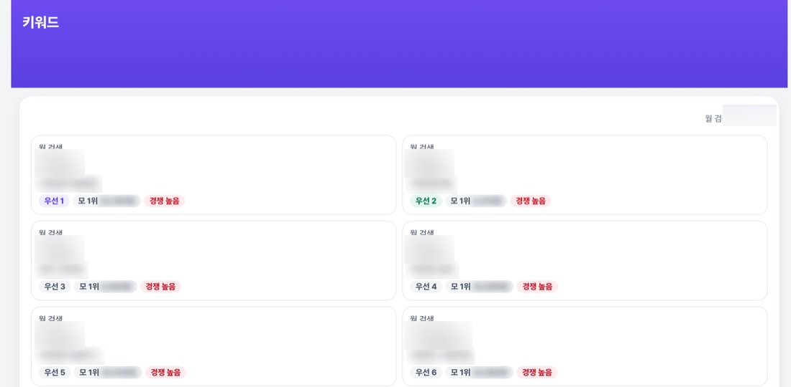
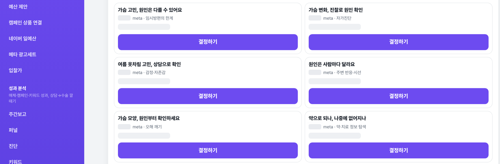
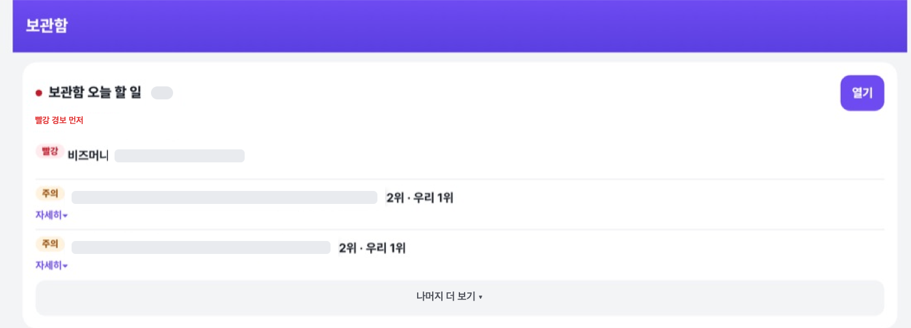
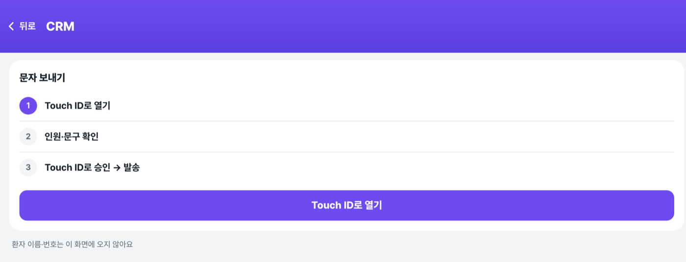
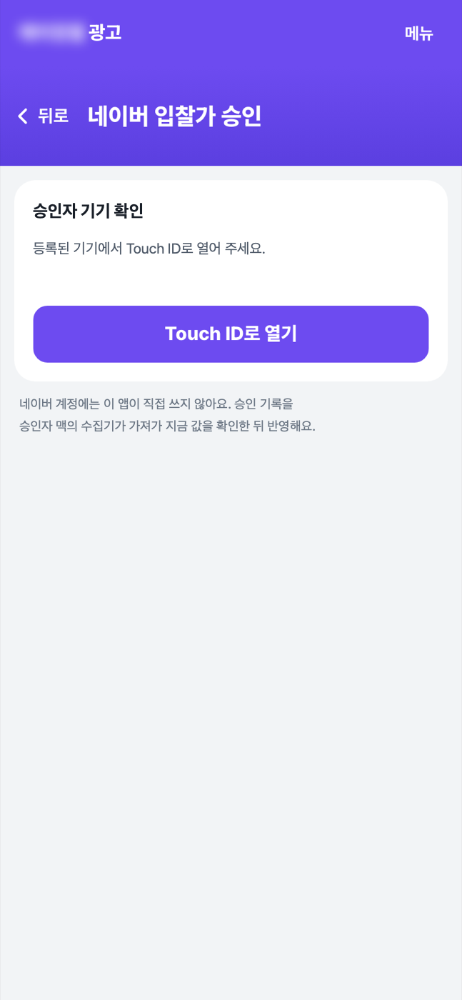

사례 01 · 막힌 곳 · 통화
리드는 들어오는데 통화에서 끊겼습니다
신청 직후 응대를 자동화했습니다.
연결이 쉬운 시간에 실장님께 순서대로 넘겼습니다.
3.8배통화 연결률
고동현 · 퍼포먼스 마케터 · 남성 성형외과
광고 노출부터 병원 수납까지 한 줄로 추적되게 만들었습니다. 매출로 확인된 광고에 예산을 먼저 씁니다.
아래로 내리면 채널 지도 → 추적 구조 → 성과 → 판단 기록 → 운영 체계 → 안전장치 순서로 이어집니다.
01 · 한 장 요약
02 · 채널 지도
환자는 광고 하나를 보고 바로 신청하지 않습니다. 검색하고, 후기를 읽고, 커뮤니티에서 물어본 뒤 신청합니다. 그래서 채널을 한 장의 지도로 묶어 봅니다.
고민을 처음 꺼내게 합니다. 이름을 기억하게 만드는 자리입니다.
병원을 견주는 자리입니다. 원인과 방법을 설명하는 글이 이깁니다.
신청 직전에 확인하는 자리입니다. 실제 후기와 답글을 관리합니다.
신청 버튼이 있는 자리입니다. 여기만 끝까지 추적됩니다.
03 · 추적 구조
광고 화면은 리드에서 멈춥니다. 병원의 돈은 수납에서 생깁니다. 그 사이를 제가 이어 붙였습니다. 노출부터 매출까지 모든 단계에 기록 장치를 달았습니다.
매체가 세는 전환과 병원 전산의 수납을 맞대 봅니다. 둘이 다르면 전산 숫자를 믿습니다.
블로그를 읽고 며칠 뒤 전화한 환자처럼 끊기는 길이 있습니다. ‘추정’으로 따로 적고, 판단할 때는 확인된 숫자 뒤에 놓습니다.

단계마다 누적 수와 빠진 수를 보여 줍니다. 기간이 다른 숫자끼리 나누면 엉뚱한 전환율이 나옵니다. 그래서 그런 칸에는 ‘판단 불가’와 이유를 띄웁니다.
04 · 대표 성과
맡은 첫 달과 지금을 같은 병원, 같은 기준으로 비교했습니다. 모두 병원 전체 결과입니다. 출처는 병원 전산과 대조한 매출 대시보드입니다.
사례 01 · 막힌 곳 · 통화
신청 직후 응대를 자동화했습니다.
연결이 쉬운 시간에 실장님께 순서대로 넘겼습니다.
사례 02 · 막힌 곳 · 내원
예약 전날 안내 문자를 승인 한 번으로 보냅니다.
예약 시간과 위치를 한 번 더 알립니다.
사례 03 · 막힌 곳 · 측정
리드를 병원 전산 수납과 대조했습니다.
수술로 이어진 소재와 키워드를 남겼습니다.
메타 리드
수술

05 · 판단 기록
제가 세운 가설과 그 결정이 어디로 이어졌는지 적었습니다.
06 · 운영 체계
광고 운영 앱과 매출 대시보드를 기획하고, AI 개발 팀을 지휘해 만들었습니다. 아래 화면의 이름과 숫자는 모두 가렸습니다.
일 한 건의 흐름: 총괄 AI가 일을 나누고 → 병원 전산에서 숫자를 맞추고 → 광고 운영 에이전트가 바꿀 것을 제안하면 → 제가 승인합니다.




07 · 안전장치
자동화가 빨라도 예산과 고객 문자는 되돌리기 어렵습니다. 그래서 판정까지만 자동으로 합니다.


네이버 입찰가 승인 · 등록된 맥의 지문으로만 열립니다
08 · 함께 일하게 되면
추적 장치부터 깝니다. 숫자가 맞아야 예산을 옮깁니다.
막힌 단계를 찾아, 예산보다 그 단계를 먼저 고칩니다.
반복 업무는 AI·자동화로 넘기고, 사람은 결정에 집중하게 합니다.
고동현 · 010-8781-7805 · dbtkdqk@naver.com